教育のちから
画一化 多様性点数や偏差値を追い求め、子どもを同じ形にはめ込む教育ではなく、 一人ひとりの個性や可能性を大切にする教育へ。
アクション
- 少人数学級の拡充
- 不登校支援の強化
- 探究学習・起業家教育の推進
- オーガニック給食や食育の推進
- 多様な学びの選択肢の充実
- 子ども食堂やユースセンターなど、校外での居場所づくり
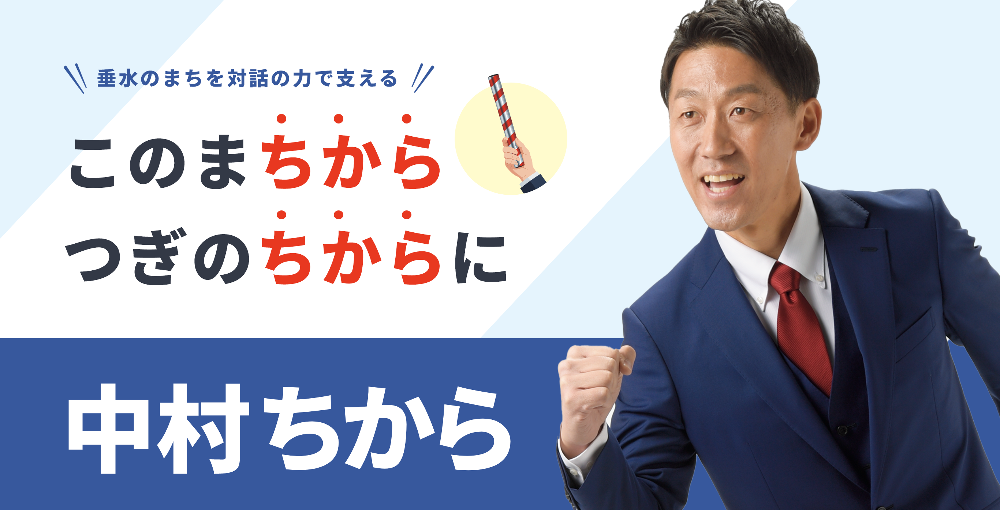
今の学校や子育てを取り巻く環境は、現場の努力だけでは変えられない課題が広がっています。 その現実を変えるには政治の力が必要です。
だから私は、教室から議会へ踏み出し、子どもたちの笑顔を守れる社会を実現し、 誰一人取り残さないまちを垂水からつくります。
でも、それは私一人ではできません。一人ひとりの“ちから”が必要です。 対話を通してあなたの声を“ちから”に変え、次の世代が希望を持てる社会を実現します。
未来のバトンを、ここ垂水から、トモニ繋いでいきましょう！
中村ちからの政策を見る
夢にまで見た教員の道を離れ、
政治に挑戦します！
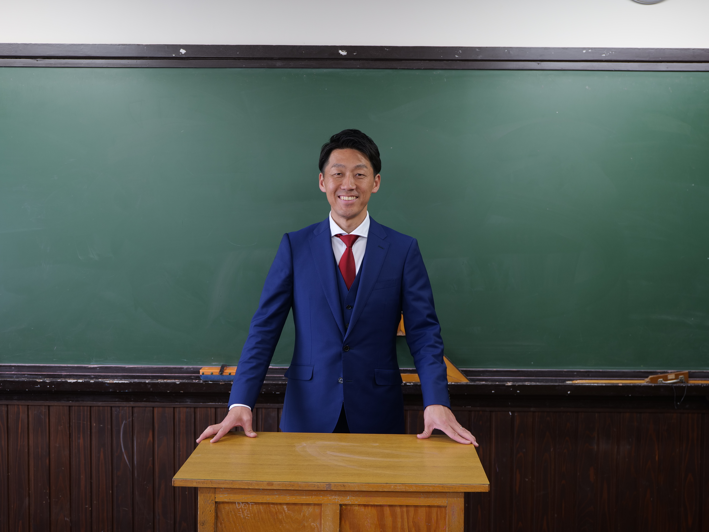
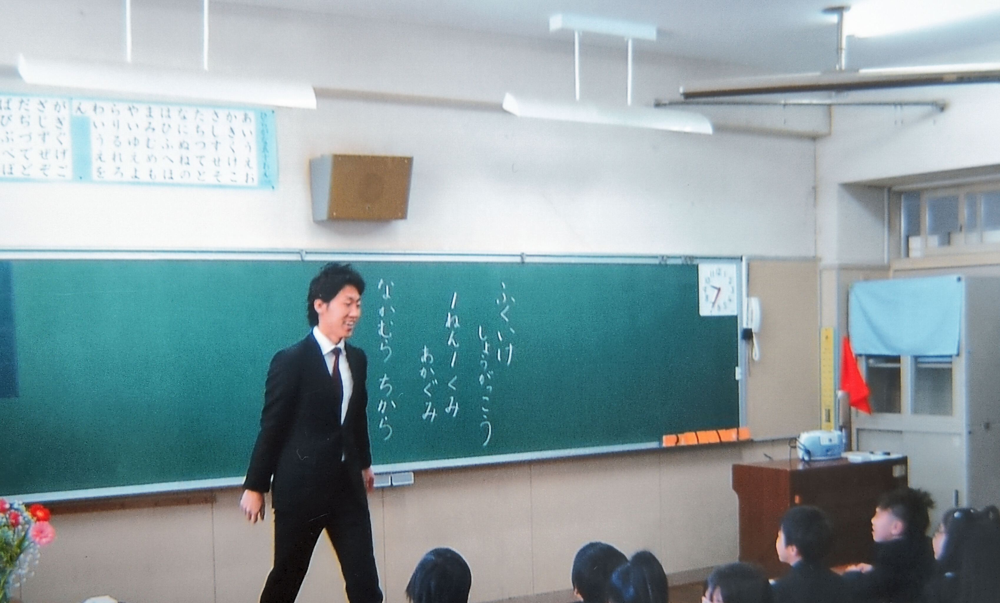
将来への不安を感じる人が増えている今だからこそ、子育てや仕事、 老後の暮らしに安心を感じられる社会をつくりたい。
誰かが困っているときに「おたがいさま」と支え合えるまち。 安心や希望を感じ、誰もが挑戦できるまち。 人にやさしく、人が輝くまちを、垂水からつくりたい。
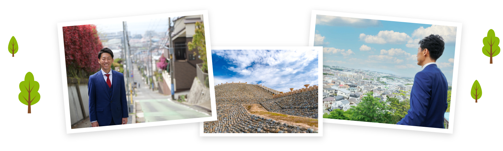
中村ちからの政策。対話で受け取った声を、垂水の暮らしを支える具体的な行動へ変えていきます。
点数や偏差値を追い求め、子どもを同じ形にはめ込む教育ではなく、 一人ひとりの個性や可能性を大切にする教育へ。
子どもも高齢者も、障がいのある人もない人も、誰もが安心して暮らし、 共に支え合い、自分らしく輝ける共生のまちへ。
地元で働き、地元で買い、地域で支え合う。 人とお金が地域で循環する、持続可能で元気な垂水へ。
「政治は難しい」「自分には関係ない」ではなく、 誰もが声を届け、対話しながらまちをつくれる垂水へ。
恩師・松浦先生と出会う。 学級通信や子どもたちの作文を通して、一人ひとりと丁寧に向き合い、心を通わせる教育に感動。 子ども、保護者、地域がつながり、深い信頼関係の中で、自分でも驚く程に成長を実感する“教育のちから”に憧れ、教師を志す原点となる。
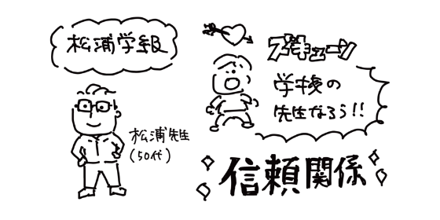
教員になることを夢見て、 授業の合間をぬって神戸市立小学校でのボランティア活動に励む。 その中で出会った素晴らしい先生方の姿、 そして「人は人によって人になる」という神戸市の教育理念に深く共感。 「絶対に神戸で働く！」という強い意志のもと、 採用試験は神戸市だけを受験し、合格。
子どもたちと本気で向き合うだけでなく、 学級通信や家庭訪問、懇談会を通して、保護者との対話と信頼関係を大切にしてきた。 家庭訪問では、“いかなご”の差し入れを大量にいただくほど、温かなつながりにも恵まれる（笑） 全国各地、時には海外の外部研修や勉強会にも積極的に参加し、 「教師自身が学び続けること」を大切に、教育に向き合い続ける。
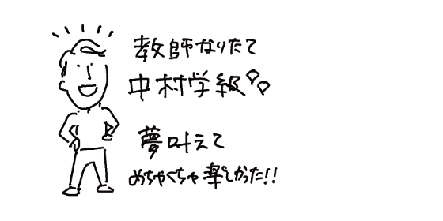
誰もが安心して過ごせる学校とは言えなくなっている現実を見過ごすことができず、 19年間勤めた教員を辞め、政治の世界へ飛び込むことを決意。 子どもたちの未来を守るため、現場で聞いてきたリアルな声を政策へ届けていく。
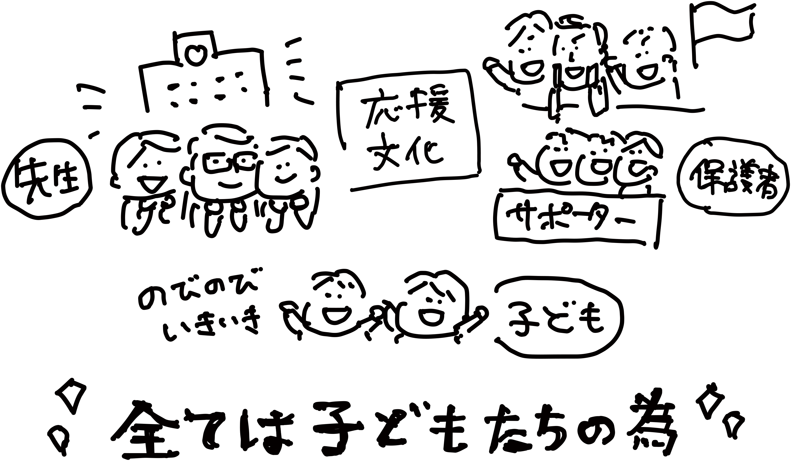
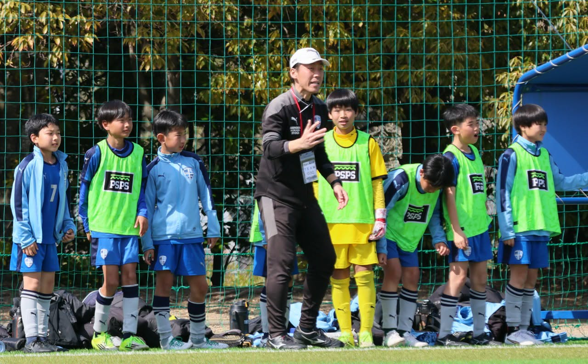
息子がきっかけでサッカーチームのコーチを務め、全国大会出場を果たす。
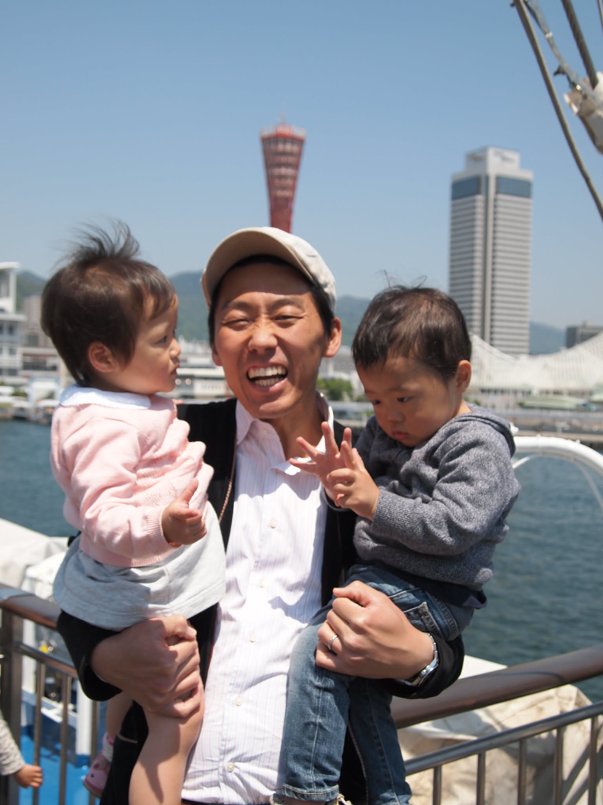
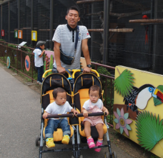
長男・次男＆長女(双子)に恵まれ、子育てに奮闘。
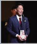
グランプリ受賞
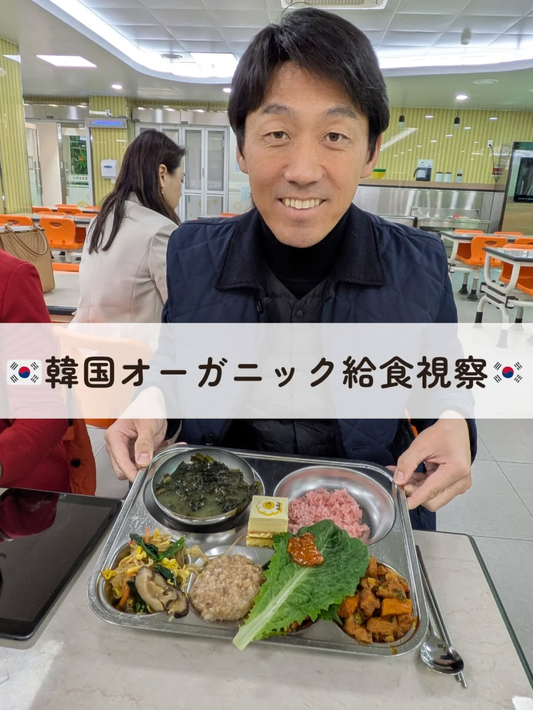
2025年12月、オーガニック給食先進国：韓国へ視察。
子どもたちのため、働く仲間のために、中村ちからさんは活動しています。 垂水区のみなさんの声を届ける挑戦を、あなたの“ちから”で支えてください。
後援会加入フォームへ子どもたちのため、働く仲間のために、中村ちからさんは活動しています。神戸市垂水区のみなさんの声を届けましょう！
みずおか 俊一 立憲民主党代表代行 参議院議員常に市民目線で笑顔な中村さん！培った現場経験で地域課題を積極的に解決してくれること間違いないでしょう。
井坂 信彦 前衆議院議員中村ちからさんは、信頼できる人です。市民、県民のために、是非とも一緒に働きたいです。
黒田 一美 兵庫県議会議員（垂水区）